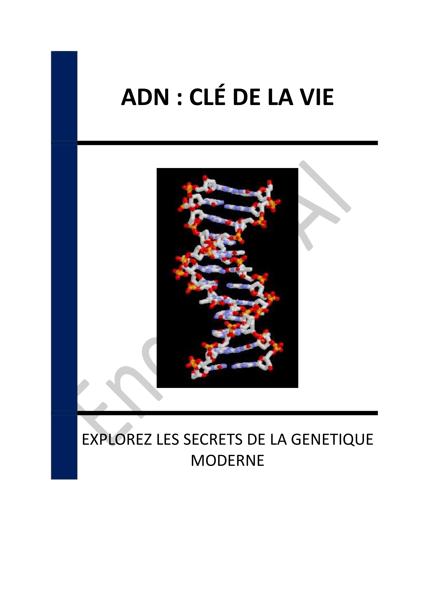

▶
Vitesse
++
+
=
-
--
INTRODUCTION - L'ESSENCE DE LA VIE : UNE EXPLORATION DE L'ADN
Chapitre 1 - INTRODUCTION À L'ADN : LA MOLÉCULE DE LA VIE
1.1 - Origine et Découverte de l'ADN
1.2 - Rôle Fondamental de l'ADN dans les Organismes Vivants
1.3 - Applications Modernes de l'Étude de l'ADN
Chapitre 2 - STRUCTURE DE L'ADN : DOUBLE HÉLICE ET NUCLÉOTIDES
2.1 - Composition Chimique de l'ADN
2.2 - Organisation en Double Hélice
2.3 - Stabilité et Variabilité de l'ADN
Chapitre 3 - LES GÈNES : L'INFORMATION GÉNÉTIQUE
3.1 - Définition et Structure des Gènes
3.2 - Fonctionnement des Gènes
3.3 - Régulation de l'Expression Génétique
Chapitre 4 - LA RÉPLICATION DE L'ADN : MÉCANISMES ET IMPORTANCE
4.1 - Processus de Réplication de l'ADN
4.2 - Fidélité et Réparation de l'ADN
4.3 - Implications de la Réplication dans la Biologie et la Médecine
Chapitre 5 - MUTATIONS : ORIGINES ET CONSÉQUENCES
5.1 - Types de Mutations
5.2 - Causes des Mutations
5.3 - Conséquences des Mutations
Chapitre 6 - L'EXPRESSION GÉNÉTIQUE : DE L'ADN AUX PROTÉINES
6.1 - Transcription de l'ADN en ARN
6.2 - Traduction de l'ARN en Protéines
6.3 - Régulation de l'Expression des Protéines
Chapitre 7 - MÉDECINE PERSONNALISÉE ET GÉNOMIQUE
7.1 - Bases de la Médecine Personnalisée
7.2 - Applications Cliniques de la Génomique
7.3 - Défis et Perspectives de la Médecine Génomique
Chapitre 8 - ÉTHIQUE ET DÉBATS SOCIÉTAUX AUTOUR DE LA GÉNÉTIQUE
8.1 - Questions Éthiques de la Génétique
8.2 - Impact Sociétal des Découvertes Génétiques
8.3 - Réglementation et Politiques en Génétique
CONCLUSION - L'HÉRITAGE DE L'ADN : RÉFLEXIONS ET PERSPECTIVES
📄 Consulter les annexes du livre
Mentions légales